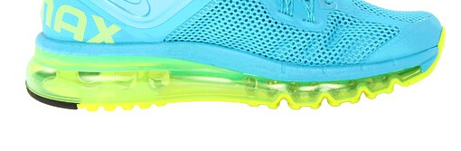
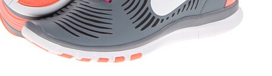

Running
手机软件
- nike+ running
跑鞋
2014-07-23 by yFar
其实跑鞋里面nike不好，好的是艾斯克死、new balance、索康尼这些，但是，普通跑一下足够了三，平时穿也可以，这三个就显得贵了，而且我们穿专业跑鞋其实跑起来不舒服。
- max 系列，你还轻了点，140斤以上适用，避震好，气垫看上去比较厚，大概这个样

- free 系列，轻巧，适合体重轻，跑步少，强度小的，但避震不太够，容易影响脚踝和膝盖，大概这个样

- zoom 系列，我就准备选这个，中等，兼顾体重和避震，再选一下外观、材质（网面还是PVC混合）、颜色，平时也可以穿，大概这样

- 正确的跑步姿势防止伤膝盖:http://www.zhihu.com/question/19850430
- 打球体能力量练习：让你的膝关节更有力（三）:http://ymq.ctsports.com.cn/baojian/2011061036828.html
- 膝盖训练:http://blog.sina.com.cn/s/blog_6f6c44b201010syf.html
- 几种膝关节损伤的康复训练:http://www.douban.com/note/312545075/?type=like
- 膝关节的损伤和康复训练方法:http://bbs.hupu.com/9132139.html
- 史上最强“变型记”：90天肉丸变型男